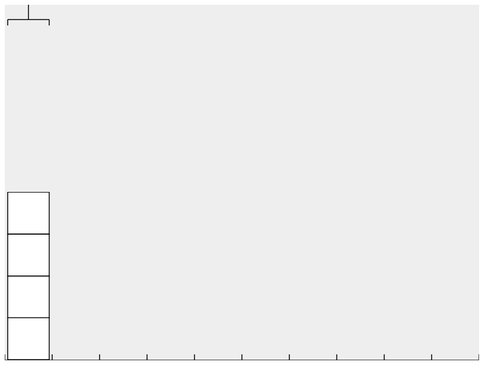

De robotarm is een opdracht in lua en javascript. Door een bevel te geven aan robotarm kan je zorgen dat de robotarm acties uitvoert. Ik heb door deze opdracht geleerd hoe if en loop werkt, hoe je je code kort houdt en hoe ik een bevel geeft aan robot

De recept was een opdracht waar ik moest een recept maken op een website van mijn meest gelieft eten.

De handy is een opdracht in html en css. Door deze opdracht heb ik geleerd hoe ik met position werkt, werken met hover en werken met wat wil ik laten zien.
Layout was een opdracht om een website te maken dat mobile vriendelijk is. In deze opdracht heb ik geleerd hoe ik een hele niuewe ding zelf kan uitzoeken en uitwerken.
De recept was een opdracht waar ik moest een recept maken op een website van mijn meest gelieft eten.
De handy is een opdracht in html en css. Door deze opdracht heb ik geleerd hoe ik met position werkt, werken met hover en werken met wat wil ik laten zien.
Layout was een opdracht om een website te maken dat mobile vriendelijk is. In deze opdracht heb ik geleerd hoe ik een hele niuewe ding zelf kan uitzoeken en uitwerken.